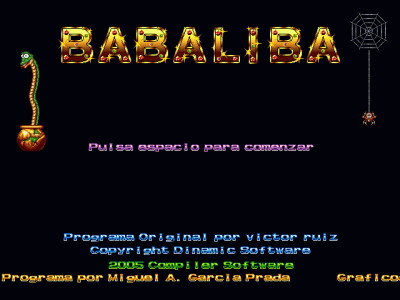
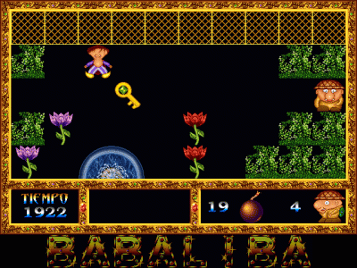
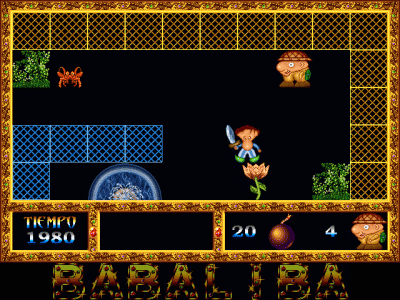

Babaliba is a Sinclair ZX Spectrum computer game programmed by Víctor Ruiz, founder of Dinamic, one of the great software companies of Spanish software "golden age", in 1985. It is part of the trilogy started with Saimazoom, followed by Babaliba and ended with the amazing Abu Simbel Profanation, starring Johnnie Jones.
Babaliba is a video-adventure with fast movements and frenetic action. Colourful and big sized graphics, not forgetting we are talking about a 1985 Spectrum game.



The goal of the game could be the script of a 50's decade adventures movie starred by Clark Gable, or more recently by Indy Jones (the character that "inspired" Johnnie): Bad guy kidnapps our friend and, obviously, we must rescue him and, by the way, pick up the treasure he is keeping in the palace and also kidnap his beautiful daughter. Easy? Let's try it.
The aim we had creating this remake is honoring Dinamic, whose 20th anniversary was last year 2004 and the game itself, because this year 2005 will be its 20th anniversary too. We started doing the game a couple of years ago, but the project has been stopped for a long time until we have decided to restart it to cooperate with REDO project at Remakes Zone.
We hope you will enjoy playing this game as we have done creating it.
Your opinion